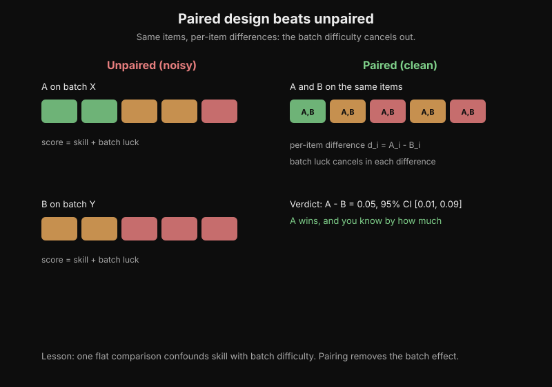
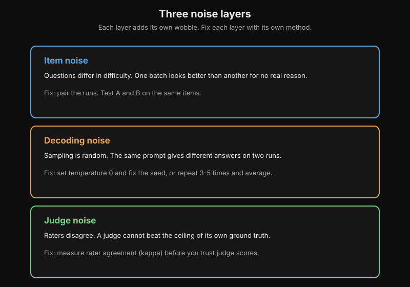
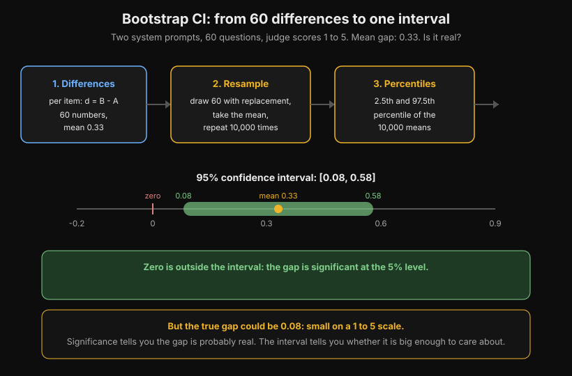
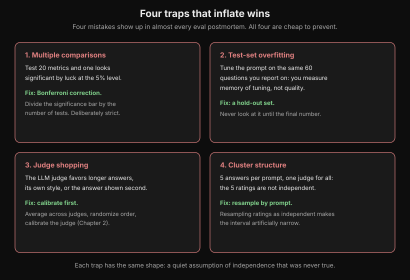
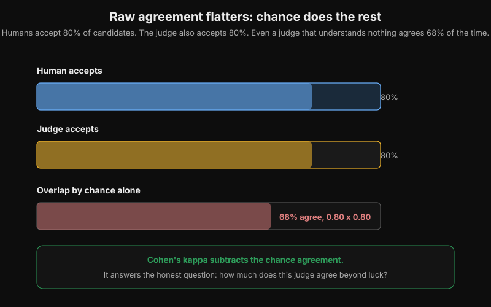
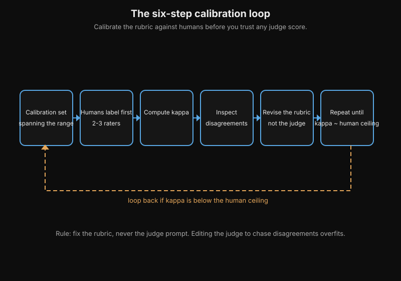
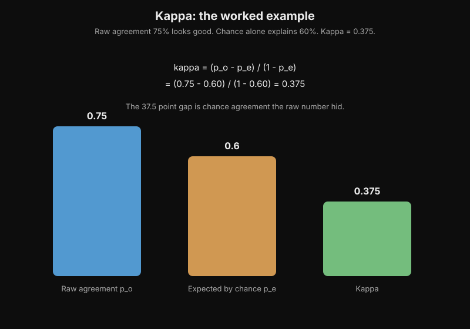
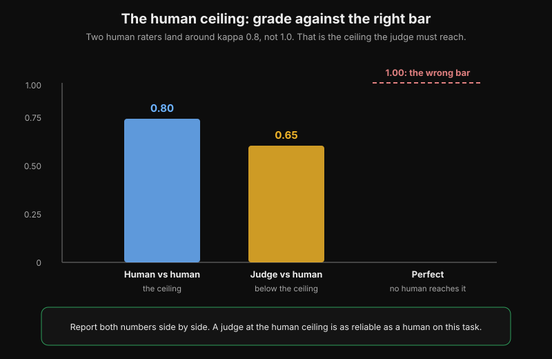
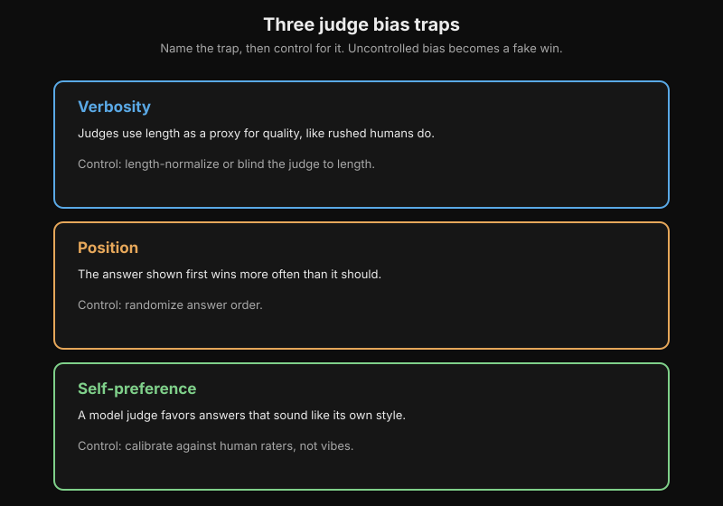

Eval Statistics for Non-Deterministic Systems
Volume 11 covers the core statistics toolkit: p-values, confidence intervals, standard errors, and the paired bootstrap for comparing two methods on the same seeds. That chapter answers "is the difference real?" for deterministic training runs.
Two important questions remain, and they belong to this appendix. First, how do you run an A/B comparison when the system itself is non-deterministic, as every LLM output is? Second, how do you check an LLM autorater against human judgment before you trust its scores? Both are skills you will use in any serious eval pipeline.
Chapter 1. A/B design when the outputs are random
1.1 The three layers of noise
Compare two prompts on the same 100 questions. Prompt A wins by 3 points. Did it win, or did it get lucky? An LLM eval has three separate layers of randomness, and a good design controls each one.
Layer one is the items. Some questions are easy, some are hard. If you score A on one batch of questions and B on another, you are mostly measuring which batch was easier. The fix: pair the runs. Run both A and B on the same items and analyze the per-item differences. Volume 11's paired bootstrap chapter is built on this idea.

How to read this diagram
- The left side shows the unpaired design. A runs on batch X, B runs on batch Y.
- Each batch has its own mix of easy, mid, and hard items. Score equals skill plus batch luck.
- The right side shows the paired design. A and B both answer the same five items.
- For each item, take the difference d_i = A_i - B_i. Batch luck cancels inside each difference.
- The verdict is a paired difference with a confidence interval: A minus B is 0.05, 95 percent CI [0.01, 0.09].
Layer two covers decoding. The same prompt on the same question can give different answers on two runs, because sampling is random. If you compare one A sample against one B sample, decoding noise can swamp the real difference.
Layer three is the judge. If a human or an LLM rates the outputs, that rating carries its own noise. One tired rater on a Friday afternoon is a different instrument than the same rater on Monday morning.

How to read this diagram
- Three stacked boxes name the three layers: item noise, decoding noise, and judge noise.
- Item noise comes from question difficulty. The fix pairs runs: test A and B on the same items.
- Decoding noise comes from random sampling. The fix is temperature 0 with a fixed seed, or 3 to 5 repeats.
- Judge noise comes from rater disagreement. The fix measures kappa before you trust judge scores.
- Fix the layers separately. One flat average cannot remove all three.
A design that ignores any layer is a design that can lie to you.
Item noise ......... fix with a paired design: same items for A and B
Decoding noise ..... fix by repeating each case 3 to 5 times, then average
Judge noise ........ fix by calibrating the judge first (see Chapter 2)
1.2 The standard design, step by step
Fix the decoding layer first. Where you can, set temperature to 0 and fix the seed. Deterministic outputs are simply easier to compare. Where you cannot fix the seed, run each case 3 to 5 times and average the scores. Do the same when you want to measure typical behavior rather than one lucky draw. That turns decoding noise from a lie into a measurable wobble.
Next, pair the systems. Feed the exact same items to A and B. For each item i, compute the difference d_i = score_B(i) minus score_A(i). Then run all your statistics on the differences, not on the two raw score lists. This is the paired design. It subtracts out "this item was easy" before any test is run, which gives much more statistical power than comparing two independent score distributions.
Finally, size the test before you run it. A common working rule is at least 30 test cases per variant. That number comes from the Central Limit Theorem kicking in, not from superstition. Decide your minimum detectable effect in advance: how big a difference would have to be for you to act on it? If only a 5 point gap would change your decision, then a test that can only detect 10 point gaps wastes compute.
1.3 A worked example, with real numbers
You compare two system prompts on 60 customer-support questions. An LLM judge scores each answer from 1 to 5. You run each case once per system at temperature 0, and you pair the scores per question.
The raw results: system A averages 3.62, system B averages 3.95. The gap is 0.33. Is it real?
First compute the per-item differences d_i = B minus A. The mean of the differences is also 0.33. Now bootstrap those differences. Resample the 60 differences with replacement, compute the mean of each resample, repeat 10,000 times, and take the 2.5th and 97.5th percentiles. You get a 95% confidence interval of [0.08, 0.58].
Zero is not inside the interval, so the difference is significant at the 5% level. But look at the width: the true gap could be as small as 0.08. On a 1 to 5 scale, 0.08 is a small effect. Significance tells you the gap is probably real. The interval tells you whether it is big enough to care about. That is the sentence most teams forget to write.

How to read this diagram
- Box 1 holds the 60 per-item differences, B minus A, with mean 0.33.
- Box 2 resamples 60 differences with replacement and takes the mean, 10,000 times.
- Box 3 takes the 2.5th and 97.5th percentiles of those 10,000 means.
- The number line shows the interval [0.08, 0.58]. The gold dot is the mean, 0.33.
- The red tick marks zero, which sits outside the interval: the gap is significant at the 5% level.
- The gold box adds the caution: the true gap could be 0.08, which is small on a 1 to 5 scale.
Here is the whole analysis in one short program.
import random
def paired_bootstrap_ci(diffs, n_resamples=10000, alpha=0.05, seed=0):
# diffs: one number per item, B's score minus A's score on the SAME item.
# Same-item pairing is what kills item noise: "this question was easy"
# is already subtracted before any statistics happen.
rng = random.Random(seed) # Fixed seed so the analysis itself is reproducible.
n = len(diffs)
mean = sum(diffs) / n # The point estimate: average gap, B over A.
# Bootstrap: resample the differences with replacement, 10k times.
# Each resample is a fake experiment "like this one". The spread of the
# fake means estimates how much the real mean could wobble.
resampled_means = []
for _ in range(n_resamples):
sample = [rng.choice(diffs) for _ in range(n)] # n draws with replacement
resampled_means.append(sum(sample) / n)
resampled_means.sort()
# Percentile interval: chop alpha/2 off each tail of the sorted means.
lo = resampled_means[int((alpha / 2) * n_resamples)]
hi = resampled_means[int((1 - alpha / 2) * n_resamples)]
return mean, lo, hi
def wilson_interval(hits, n, z=1.96):
# Wilson score interval for a yes/no rate. Use this instead of the
# bootstrap when the sample is small and lopsided (for example 20 hits
# out of 20 tries, where the plain bootstrap would claim a CI of [1, 1]).
# z=1.96 gives a 95% interval under the normal approximation.
if n == 0:
return 0.0, 0.0 # No data at all: the honest answer is "unknown", not zero.
p = hits / n
denom = 1 + z * z / n
center = (p + z * z / (2 * n)) / denom
# The half-width shrinks the estimate toward 0.5 when n is small.
half = z * (p * (1 - p) / n + z * z / (4 * n * n)) ** 0.5 / denom
return center - half, center + half
# The worked example: 60 paired differences, mean gap 0.33.
# (These numbers are illustrative; your real diffs come from your judge.)
random.seed(7)
demo_diffs = [random.gauss(0.33, 1.1) for _ in range(60)]
mean, lo, hi = paired_bootstrap_ci(demo_diffs)
print(f"mean gap = {mean:.2f}, 95% CI = [{lo:.2f}, {hi:.2f}]")
# Edge case the bootstrap mishandles: 20/20 correct looks "perfect".
lo_w, hi_w = wilson_interval(20, 20)
print(f"Wilson 95% CI for 20/20: [{lo_w:.3f}, {hi_w:.3f}]")
How to read this diagram
- The first function takes paired differences and nothing else. That is the whole point of pairing: the input has already had item difficulty subtracted out.
- It resamples the differences with replacement 10,000 times. Each resample is a plausible alternate history of the same experiment.
- The 2.5th and 97.5th percentiles of the resampled means form the 95% interval. If zero sits outside it, the gap survives noise at the 5% level.
- The Wilson function handles the lopsided corner case. With 20 out of 20 correct, a naive interval says [1.00, 1.00], which claims certainty you do not have. Wilson gives roughly [0.84, 1.00]: honest about the small sample.
Key takeaways
- Pair the systems on the same items, average 3 to 5 repeats per case, then analyze the differences.
- A 95% interval that excludes zero means the difference is real. The interval's width tells you whether it matters.
- Size the test before running it: at least 30 cases per variant, and a pre-decided minimum effect you care about.
1.4 The traps that inflate wins
Four mistakes show up in almost every eval postmortem. All four are cheap to prevent.
The first is multiple comparisons. If you test 20 metrics, one will look significant by luck at the 5% level. When you run many tests, divide your significance bar by the number of tests. That is the Bonferroni correction, and it is deliberately strict.
The second is test-set overfitting. If you tune the prompt against the same 60 questions you report on, you measure memory of the tuning process, not quality. Keep a hold-out set you never look at until the final number.
The third is judge shopping. If the judge is an LLM, it may favor longer answers, or answers written in its own style, or the answer shown second. Average across judges, randomize answer order, and calibrate the judge first. Which brings us to Chapter 2.
The fourth is cluster structure. If each prompt produces 5 answers and one judge rates all of them, the 5 ratings are not independent. They share the same prompt and the same judge. If you resample individual ratings as if they were independent, your interval becomes artificially narrow. Resample by prompt instead. Practitioners call this a cluster bootstrap.

How to read this diagram
- Each box names one trap (red title), describes the mistake, and gives the fix (green).
- Multiple comparisons: testing 20 metrics guarantees a lucky hit. Divide the bar by the number of tests.
- Test-set overfitting: tuning on the reported set measures memory, not quality. Keep a hold-out set.
- Judge shopping: the judge has its own biases. Calibrate it first, average across judges, randomize order.
- Cluster structure: ratings that share a prompt are not independent. Resample by prompt, not by rating.
It is the fix for hierarchical variance. Item noise, decoding noise, and judge noise live in different layers. One flat bootstrap cannot represent all of them.
Last verified: September 2026. Paired design and percentile bootstrap are standard experiment-design practice, and the paired-difference construction matches Volume 11 Chapter 5. Wilson score interval for degenerate small samples and cluster bootstrap by prompt: widely used in eval-statistics practice (e.g. recent eval-benchmarking writeups, 2026). Multiple-comparison correction (Bonferroni), minimum 30 cases per variant, and 3 to 5 repeats per case: community standard rules of thumb from LLM eval engineering practice. UNVERIFIED: the exact constants (30, 3 to 5) are heuristics, not theorems. They come from practitioner writeups, not from a single citable paper.
Chapter 2. Calibrating an autorater against humans
2.1 Why judges need a license
An LLM judge is a measurement instrument, and every instrument needs calibration before its numbers count. The naive check is raw agreement: "the judge agrees with a human 75% of the time." That number flatters, because some agreement happens by chance.
Picture a task where humans accept 80% of candidates and the judge also accepts 80%. Even a judge that understands nothing would agree about 68% of the time, purely from the two 80% rates overlapping. Cohen's kappa subtracts that chance agreement. It answers the honest question: how much does this judge agree beyond luck?

How to read this diagram
- The top bar is the human accept rate: 80%. The middle bar is the judge accept rate: 80%.
- The bottom bar shows the overlap: 0.80 times 0.80, which is 68%.
- A judge that understands nothing still agrees 68% of the time, purely from the two rates overlapping.
- The green box names the fix: Cohen’s kappa subtracts the chance agreement.
2.2 The calibration loop
The loop has six steps, and the order matters.

How to read this diagram
- Six boxes run left to right: calibration set, human labels, kappa, disagreements, rubric revision, repeat.
- Humans label first, with 2 to 3 raters per example. Kappa measures their agreement.
- You inspect every disagreement and revise the rubric, never the judge prompt.
- The dashed arrow loops from step 6 back to step 1. Repeat until kappa reaches the human ceiling.
- Rule at the bottom: editing the judge prompt to chase disagreements overfits.
- Build a calibration set of 20 to 50 examples that span the whole quality range. If you only sample good examples, you calibrate on a narrow band and the judge falls apart at the tails. Deliberately include known-bad and known-borderline cases.
- Have humans label the set first, with 2 or 3 raters per example. If the humans do not agree with each other, the task or the rubric needs a fix. Fix the rubric before you touch the judge. A judge cannot beat the ceiling set by its own ground truth.
- Run the autorater on the same set with the same rubric. Keep the judge's reasoning for every rating. You will need it in step 5.
- Compute agreement with Cohen's kappa. For ordinal scales with two raters, use the weighted form. With several human raters, use Krippendorff's alpha, which handles missing data gracefully. Do not report raw percent agreement alone.
- Read the disagreements. Sort by the size of the gap and read the top 10. For each one, ask: did the judge miss something, did the human miss something, or is the rubric ambiguous? The answer is almost always the rubric.
- Revise the rubric, not the judge. Tighten the anchor language, add a sub-criterion, move a behavior into a worked example. Do not edit the judge prompt to chase individual disagreements. That overfits to the calibration set.
Calibration set (20-50 items, full quality range)
|
v
Humans label first (2-3 raters per item)
|
+----+----+
| |
humans humans
disagree agree
| |
v v
Fix the Run the autorater
rubric on the same items
|
v
Compute Cohen's kappa
(judge vs human)
|
+-------+-------+
| |
kappa below kappa above
the bar the bar
| |
v v
Revise the rubric, Judge licensed:
not the judge scores count
|
+---> back to "Run the autorater"
2.3 Cohen's kappa, worked by hand
Kappa compares observed agreement against the agreement you would expect from the two raters' individual yes-rates.
kappa = (p_o - p_e) / (1 - p_e)
Here p_o is the fraction of items where both raters agree. p_e is the agreement expected by chance from each rater's marginal rate.
A worked example. A judge and a human label 100 answers as pass or fail. The judge passes 70, the human passes 75, and they agree on 75 items (60 passes plus 15 fails). Raw agreement is 75%, which sounds good.
Chance agreement: the judge passes 70% of items and the human passes 75%. By luck alone they would both pass 0.70 times 0.75 = 0.525 of items. They would both fail 0.30 times 0.25 = 0.075. That is p_e = 0.60. Kappa is (0.75 - 0.60) / (1 - 0.60) = 0.375.
The raw number said 75%. Kappa says 0.375. The 37.5 point gap is the chance agreement that the raw number hid.

How to read this diagram
- The blue bar is raw agreement: 0.75.
- The gold bar is the agreement chance alone produces: 0.60.
- The green bar is kappa: 0.375.
- The formula is kappa = (p_o - p_e) / (1 - p_e), which gives (0.75 - 0.60) / (1 - 0.60) = 0.375.
- Lesson: a 75 percent raw score can hide a weak 0.375 kappa.
Read kappa on the standard Landis and Koch scale. Below 0 is worse than chance. 0.00 to 0.20 is slight, 0.21 to 0.40 is fair, 0.41 to 0.60 is moderate. 0.61 to 0.80 is substantial, 0.81 to 1.00 is almost perfect. Our 0.375 is fair. A judge at 0.375 should not decide anything important.
Here is the computation as code.
def cohen_kappa(a, b, c, d):
# Confusion matrix between judge (rows) and human (columns):
# a = both say yes b = judge yes, human no
# c = judge no, human yes d = both say no
# Using the matrix (not the raw agreement) is the whole point: kappa
# corrects for the agreement the two yes-rates would produce by luck.
n = a + b + c + d
if n == 0:
raise ValueError("empty confusion matrix: no labels to compare")
p_o = (a + d) / n # Observed agreement: fraction where both raters agree.
# Each rater's individual yes-rate. Chance agreement is their product:
# a judge that says yes 70% of the time and a human that says yes 75%
# of the time agree on "yes" 52.5% of the time even if both are guessing.
p_yes_judge = (a + b) / n
p_yes_human = (a + c) / n
p_e = p_yes_judge * p_yes_human + (1 - p_yes_judge) * (1 - p_yes_human)
if p_e == 1.0:
return 1.0 # Degenerate: both raters said the same thing on every item.
return (p_o - p_e) / (1 - p_e)
# The worked example from the chapter: raw agreement 75%, kappa ~0.375.
print(f"kappa = {cohen_kappa(60, 10, 15, 15):.3f}")
# Landis and Koch bands, so the number is interpretable at a glance.
def kappa_band(k):
# Band boundaries are the published Landis-Koch cutoffs.
if k < 0.0: return "worse than chance"
if k <= 0.20: return "slight"
if k <= 0.40: return "fair"
if k <= 0.60: return "moderate"
if k <= 0.80: return "substantial"
return "almost perfect"
print("band:", kappa_band(cohen_kappa(60, 10, 15, 15)))
How to read this diagram
- The function takes the four cells of the confusion matrix. Those four numbers carry everything kappa needs: both the agreement and each rater's individual yes-rate.
- p_o is the plain observed agreement: the diagonal (both yes plus both no) over the total.
- p_e is the chance agreement: the product of the two yes-rates plus the product of the two no-rates. This is the term raw percent agreement pretends does not exist.
- Kappa rescales (p_o - p_e) by the maximum possible improvement (1 - p_e). Zero means chance-level, one means perfect.
- The example prints 0.375: fair. The helper maps that to words so the number is readable in a report.
2.4 The human ceiling
Humans do not agree with each other perfectly either. On many real tasks, two human raters land around kappa 0.8, not 1.0. That human-versus-human number is the ceiling. Judging the LLM against a perfect 1.0 would be unfair. It would guarantee the judge "fails" on any task where humans themselves wobble.
The right bar is the ceiling. A judge that reaches human-versus-human agreement is as reliable as a human on this task. A judge below it is not a human substitute. You only see which case you are in when you report both numbers side by side.

How to read this diagram
- The y-axis is kappa from 0 to 1.00.
- The blue bar is human-versus-human agreement: 0.80. This is the ceiling.
- The gold bar is judge-versus-human agreement: 0.65. It sits below the ceiling.
- The dashed red line marks 1.00: the wrong bar. No human reaches it.
- The green box states the rule: report both numbers side by side.
Two bias traps deserve special attention. Self-preference: a judge built on model X tends to favor outputs written in X's style. Never let a model judge its own outputs without a calibration check against humans. Verbosity: judges, like rushed humans, use length as a proxy for quality. If your calibration shows the judge passes long answers it should fail, add an explicit "do not reward padding" rule to the rubric. Then add more long-but-wrong examples to the calibration set.

How to read this diagram
- Three boxes name three traps: verbosity, position, and self-preference.
- Verbosity means judges reward long answers. Control it by length normalization.
- Position means the first shown answer wins too often. Control it by randomizing answer order.
- Self-preference means a model judge favors its own style. Control it by calibrating against human raters.
- An uncontrolled bias becomes a fake win.
Key takeaways
- Calibrate before you trust: 20 to 50 human-labeled items across the quality range, then Cohen's kappa.
- Raw percent agreement flatters. Kappa subtracts chance agreement. Report the kappa.
- The bar is the human ceiling: judge-versus-human kappa compared against human-versus-human kappa.
- When calibration fails, revise the rubric, not the judge. Overfitting the judge to the calibration set just hides the problem.
Last verified: September 2026. Cohen's kappa definition kappa = (p_o - p_e) / (1 - p_e) and the Landis and Koch bands (1977): standard psychometric practice. The six-step calibration loop: calibration set spanning the range, humans label first with 2-3 raters, compute kappa, inspect disagreements, revise the rubric not the judge.
Practitioner writeups document this loop as standard LLM-eval engineering practice.
Krippendorff's alpha for multi-rater agreement: standard content-analysis practice. UNVERIFIED: the "20 to 50 examples" calibration-set size is a practitioner rule of thumb. The human-ceiling figure of kappa ~0.8 is typical for the tasks cited in practitioner writeups, not a universal constant.